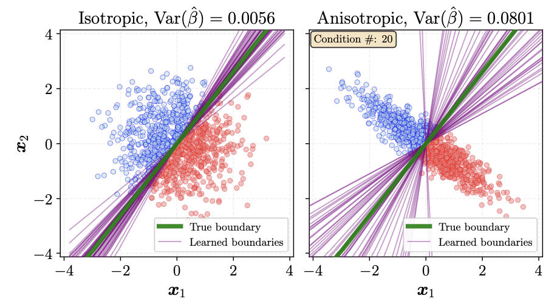
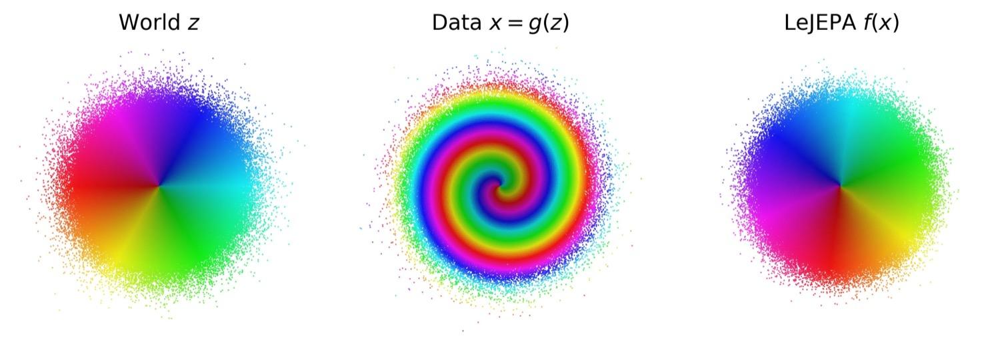
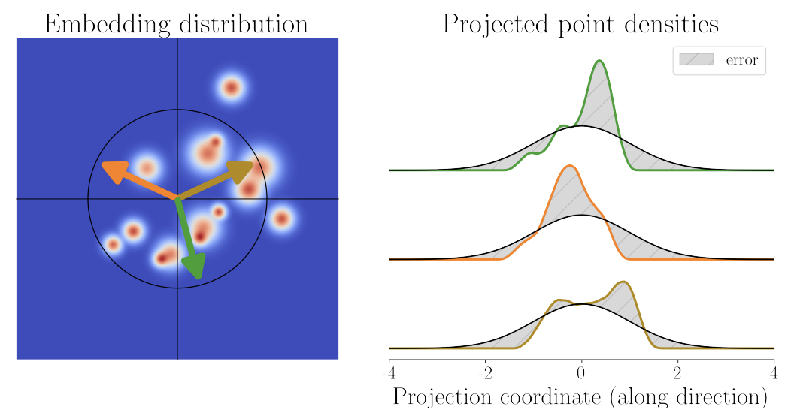
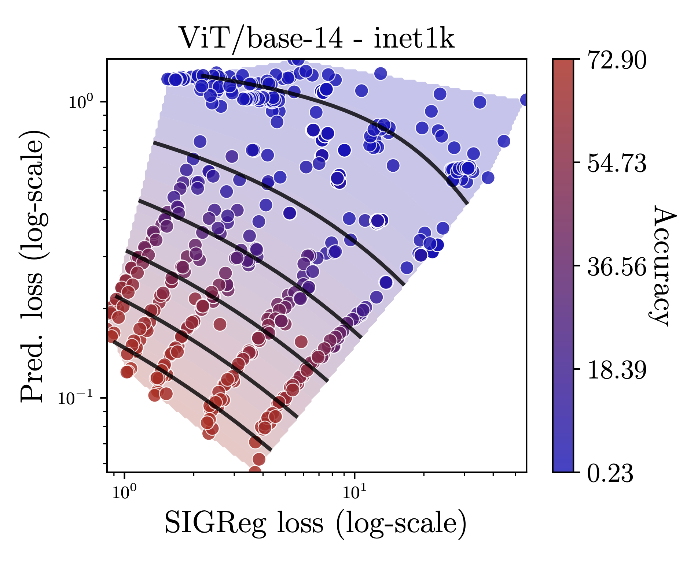

LeJEPA: Provable and Scalable Self-Supervised Learning Without the Heuristics
- Which distribution should the latent space of a world model follow?
- How do you enforce that distribution on a multidimensional embedding?
- Do we need all the heuristics developed so far to avoid collapse?
- Is there a better and scalable alternative?
LeJEPA (Balestriero and LeCun, November 2025) answers all four. The paper states four contributions:
- The optimal embedding distribution for foundation models: the isotropic Gaussian.
- SIGReg, a distribution-matching objective, provably correct and cheap at scale.
- LeJEPA, a statistically optimal JEPA that cannot collapse by construction.
- Validation across architectures and domains, and the case for in-domain pretraining.
Let's go through these contributions one by one, and uncover the intuition behind each.
The heuristics
Joint-embedding methods learn by making two views of the same input agree in representation space. The catch is that there is a trivial way to agree: map every input to the same vector. Prediction is then perfect and the representation carries no information. This is collapse, and it has shaped self-supervised learning for years.
To prevent it, the field built up a toolbox of fixes:
- Negative pairs: push apart embeddings of different inputs (SimCLR, MoCo).
- EMA teacher: targets from a slow-moving copy of the encoder (BYOL, DINO).
- Stop-gradient: block gradients through the target branch (BYOL, SimSiam).
- Centering and sharpening: normalise and temper the teacher's outputs (DINO).
- Decorrelation: spread and decorrelate the dimensions (VICReg, Barlow Twins).
Each of these works in practice, but each one blocks a symptom of collapse rather than saying what a good embedding should look like. JEPAs inherited the same toolbox. I-JEPA used an EMA target encoder and a stop-gradient; V-JEPA kept both.
The problems show up at scale:
- Many hyperparameters: EMA momentum, temperatures and penalty weights, often each with its own schedule, and all of them interacting.
- Limited transfer: a change of architecture, domain or model size usually means finding the hyperparameter balance again.
- Compute and memory: contrastive methods need large batches of negatives, and a full covariance penalty grows quadratically with the embedding dimension.
- Loss and quality are decoupled: a collapsed model can reach a lower loss than a good one, so the health of a run is checked by probing with labels.
What is missing is a method that prevents collapse by argument rather than by trick, one whose cost grows linearly and whose settings survive a change of scale. LeJEPA starts from a different question: what distribution should the embeddings follow? Once you have that answer, collapse stops being a failure mode you fight and becomes a point in distribution space you are already far away from.
Contribution 1: the optimal embedding distribution
Let's say we are training an encoder now, and someone will use its frozen embeddings for a task later. We do not have any idea about the task, so here is the question to ask: which embedding distribution minimises the worst-case downstream prediction risk?
The paper answers in two steps:
- For linear probes, it proves that the embeddings need to be isotropic.
- For some nonlinear probes, it proves that they also need to be Gaussian.
Linear probes
A linear probe fits weights $\hat{\beta}$ on the frozen embeddings $Z \in \mathbb{R}^{N \times K}$ to predict the labels $y$:
With $\alpha = 0$ this is ordinary least squares (OLS); with $\alpha > 0$ it is ridge regression. Now take two embeddings with the same total variance: $Z_{\text{iso}}$, spread equally in every direction, and $Z_{\text{aniso}}$, whose covariance eigenvalues $\lambda_1 \le \dots \le \lambda_K$ are unequal.
Whenever $\lambda_K > \lambda_1$, there always exists a downstream task for which $Z_{\text{aniso}}$ yields a higher-bias estimator than $Z_{\text{iso}}$, for any ridge penalty $\alpha > 0$.
With $\alpha = 0$ (plain OLS), the total variance of $\hat{\beta}$ is minimised by the isotropic embedding: $\mathrm{tr}\big(\mathrm{Var}(\hat{\beta}_{\text{aniso}})\big) > \mathrm{tr}\big(\mathrm{Var}(\hat{\beta}_{\text{iso}})\big)$.

The closed form of the OLS (and ridge) solution makes both proofs simple; they can be found in the paper's appendix.
In short: Lemmas 1 and 2 give the theoretical motivation for isotropy. Any imbalance between directions costs the linear probe in bias, in variance, or both, so the embedding should spread its variance equally in every direction.
Nonlinear probes
For $k$-NN and kernel-based probes, the paper proves that isotropy is not enough: among all distributions with the same total variance, the isotropic Gaussian is the unique minimiser.
For $k$-NN and kernel-based probes, among distributions subject to a fixed total-variance constraint, the isotropic Gaussian is the unique minimiser of the integrated squared bias.
The proof is in the paper's appendix. Note that it covers these two nonlinear cases only.
Gaussianity rests on a narrow base. The linear-probe lemmas only give us isotropy. The step to Gaussian comes from Theorem 1, which covers two probe families, $k$-NN and kernel-based. To be honest, these are not what people usually put on top of a foundation model in practice. On its own, that is not enough to conclude that embeddings should be Gaussian.
A second argument, from world models. When Does LeJEPA Learn a World Model? (Klindt, LeCun and Balestriero, 2026) reaches the Gaussian from a different direction. It shows that a JEPA whose embeddings are kept isotropic Gaussian recovers the true latent variables of the world up to a rotation, and that the Gaussian is the only latent distribution for which this kind of linear recovery is possible.

These theorems hold under assumptions: latent dimensions that evolve independently, the same distribution for both views, and transitions with additive noise. Real data rarely satisfies all three, so some questions stay open.
The intuition I keep coming back to: maximum entropy. Among all distributions with the same total variance, the isotropic Gaussian has the highest entropy. It commits to the least structure the budget allows. If we have no idea what the downstream task will be, that is exactly what we want: keep the embeddings as general as possible. A good embedding then does two things at once. It keeps similar examples close together, and it spreads everything out to push the overall entropy up, so the embedding space holds as much generic information as possible for whatever task comes later.
What if we do know something about the task? In practice we often know the domain, or roughly which tasks the model will serve. Optimising for the worst case over all tasks then throws that knowledge away. How would the optimal distribution change? Would it become anisotropic along the directions that matter, or not Gaussian at all? I would be curious to see work on this.
What this means for collapse
Collapse stops being a separate phenomenon requiring a separate mechanism. A collapsed encoder produces a degenerate distribution, which is simply the most extreme way of missing the isotropic Gaussian. Anisotropy is bad for exactly the same reason, just less dramatically. One quantity explains both the catastrophic failure and the everyday mediocrity.
Contribution 2: SIGReg
Knowing the target distribution is one thing. Enforcing it on a high-dimensional embedding at every training step is another: estimating a high-dimensional density directly is far too expensive.
Sketched Isotropic Gaussian Regularization (SIGReg) avoids that with one idea: a distribution is fully determined by its one-dimensional projections (the Cramér–Wold theorem). So instead of testing in $K$ dimensions, test in one dimension, many times:
- Sample random directions.
- Project the batch of embeddings onto each direction.
- Measure how far each projection is from a standard normal, and average.

One direction constrains almost nothing. With enough random directions, the only distribution that passes all of them is the isotropic Gaussian.
For step 3 the paper uses the Epps–Pulley test, which compares characteristic functions. It is chosen for training rather than for statistics: its gradients are bounded, so the regulariser cannot blow up, and it needs no sorting. The whole thing runs in linear time and memory and splits easily across GPUs.
To me, this is a genuinely beautiful algorithm. The idea fits in a sentence, every step has a clear reason behind it, and the result is both provably correct and cheap enough to run at scale. It is honestly one of the reasons I got interested in JEPA-style pretraining, and in self-supervised learning more generally.
The heuristics that came before always felt a little unsatisfying to me. Each one worked, but they read like patches added one at a time, and it was hard to say why that particular combination was the right one. SIGReg shows that it can be done differently: decide what the embeddings should look like, enforce exactly that, and collapse is handled as a consequence rather than as a separate fight.
Contribution 3: LeJEPA
Now combine the two, and the architecture is almost embarrassingly plain:
- Take an image and make several augmented views of it: a couple of large global views and several small local ones.
- Encode every view with the same encoder.
- Prediction: pull every view's embedding toward the average embedding of the global views.
- SIGReg: push the embeddings toward an isotropic Gaussian.
The loss is just the sum of the two, with a single weight:
That weight is the only hyperparameter, and $\lambda = 0.05$ works across the board. The whole implementation is about 50 lines of PyTorch.
Collapse is now ruled out by the objective itself. Prediction alone would be happiest with a constant encoder, since then every view matches perfectly. But a constant embedding looks nothing like a Gaussian along any direction, so SIGReg does not allow it.
Here is what that deletes:
| Removed | Why it is no longer needed |
|---|---|
| Stop-gradient | Bounded gradients; nothing to protect against |
| Teacher–student / EMA | No asymmetry required: one encoder, all views |
| Predictor network | Views predict the global mean directly |
| Variance + covariance terms | Subsumed by matching the full distribution |
| Temperature and momentum schedules | Nothing to anneal |
| Per-architecture tuning | Same $\lambda$ across families (see below) |
Contribution 4: validation at scale
The claim to test is not "LeJEPA is the most accurate method", but "LeJEPA works without retuning". That claim only holds up if you sweep widely, and the paper does.
Competitive on ImageNet-1K. With a frozen backbone and a linear probe, LeJEPA lands on par with I-JEPA on the same ViT-H/14, without any of its anti-collapse machinery.
Training loss tracks downstream accuracy. Remember the last problem with the heuristics: loss and quality were decoupled. Here they move together.

This is the result I find most useful in practice: if the loss tracks quality, you can select checkpoints, stop early and search hyperparameters without any labels.
In-domain pretraining beats frontier transfer. On Galaxy10 (galaxy images, about as far from ImageNet as it gets), LeJEPA pretrained on the galaxy images themselves is compared with DINOv2 and DINOv3 transferred from natural images. In every setting, the best in-domain LeJEPA model comes out on top:
| Model | Full fine-tuning | Frozen backbone | ||
|---|---|---|---|---|
| 1-shot | Full | 1-shot | Full | |
| LeJEPA, pretrained in-domain | ||||
| LeJEPA ConvNeXt-V2 Nano | 29.42 | 82.72 | 28.74 | 76.52 |
| LeJEPA ResNet-34 | 24.27 | 83.28 | 31.08 | 78.17 |
| Frontier models, transferred | ||||
| DINOv2 ViT-S/16 | 21.05 | 78.34 | 27.68 | 67.62 |
| DINOv3 ViT-S/16 | 24.71 | 81.60 | 30.17 | 71.38 |
The gap is largest with a frozen backbone and full labels: 78.2% against 71.4% for DINOv3. For specialised domains, training your own encoder becomes a realistic option.
More results, including ImageNet-100, Food101 and the full hyperparameter sweeps, are in the paper.
Summary
LeJEPA replaces the toolbox of anti-collapse heuristics with one principled answer: